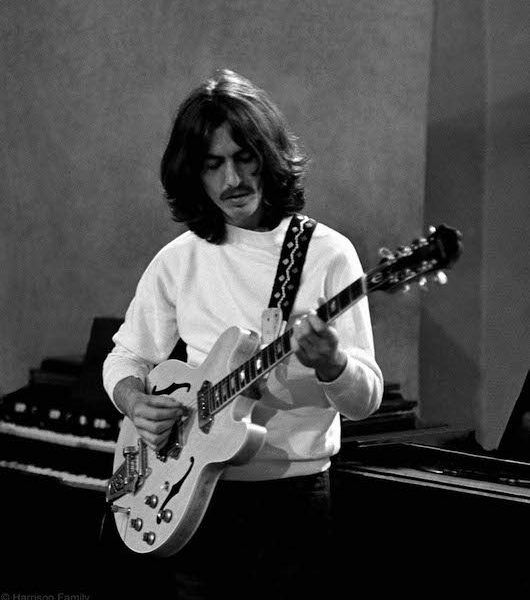
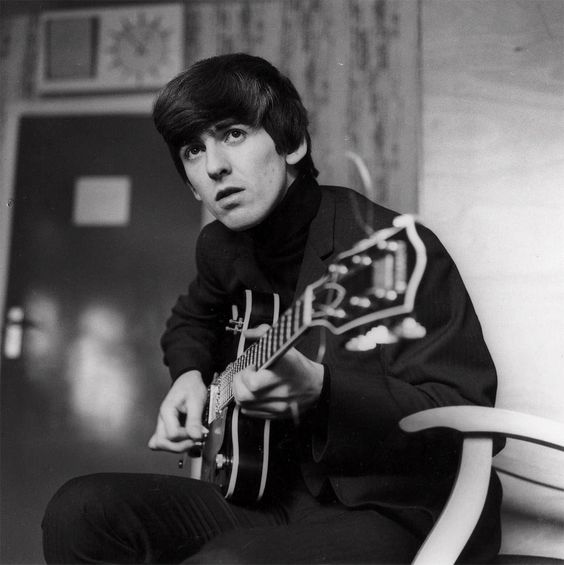
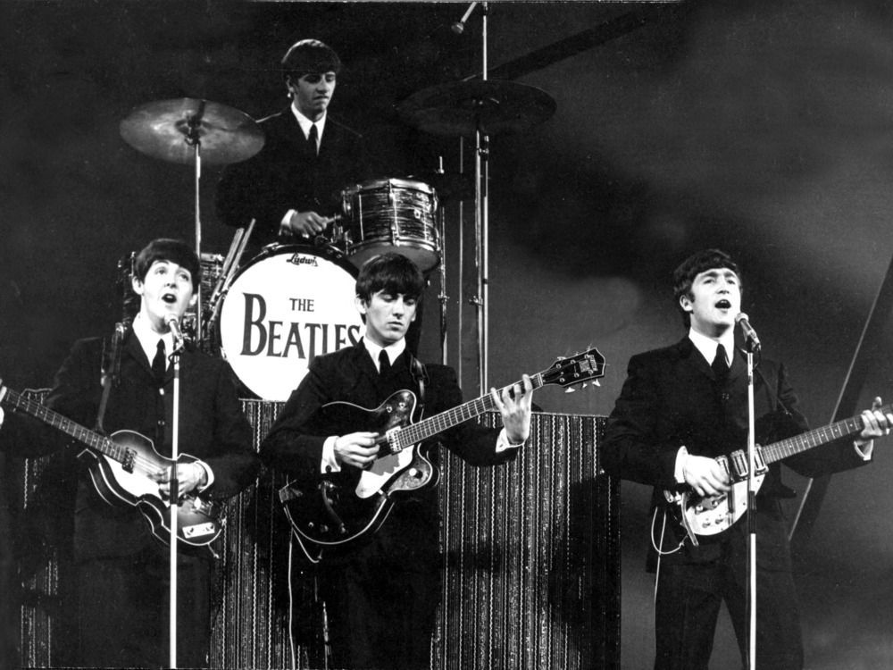
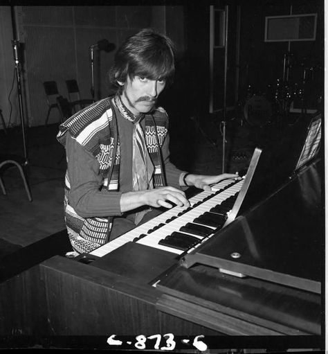

George Harrison

George Harrison MBE (25 Februari 1943 – 29 November 2001) adalah musisi, penyanyi, penulis lagu dan produser film Britania Raya.[1] Ia paling dikenal sebagai gitaris grup musik The Beatles.
Dikenal sebagai Beatle yang Pendiam (Quiet Beatle), George Harrison merupakan seorang penulis lagu yang dibayang-bayangi oleh dua orang musisi besar yang sering kali membuat orang tidak banyak yang memandang bakatnya di dunia musik.
Lagu-lagu yang ditulis dan diciptakan oleh George Harrison seperti "Something" dan "While My Guitar Gently Weeps" dianggap sebagai beberapa dari adikarya The Beatles.
Album solo perdana George Harrison yang berjudul All Things Must Pass memperlihatkan kemampuannya yang baik dalam mengeksplorasi tema-tema spiritual dengan komposisi melodi yang bervariasi.
Harrison memperkenalkan The Beatles dan generasi yang besar pada tahun 1960-an kepada spiritualisme timur.
About George Harrison

George Harrison lahir di Wavertree, Liverpool pada tanggal 25 Februari 1943. Keluarganya terdiri dari ayah yang bekerja sebagai sopir bus bernama Harold Harrison, ibu bernama Louise 2 kakak laki-laki dan 1 kakak perempuan. Seperti kebanyakan remaja lainnya ketika itu, Harrison remaja menyukai rock n roll dan musik skiffle. Pada usia 14 tahun, ia membeli gitar pertamanya yang berharga £3.
Saat sedang bersekolah di Liverpool Institute ia berteman dengan Paul McCartney. Bersama abangnya, Pete dan teman bernama Arthur Kelly, Harrison membentuk grup musik skiffle yang tidak berumur panjang bernama The Rebels.
Karena kemampuan bermain gitarnya yang baik, Paul McCartney mengajaknya bergabung dengan The Quarrymen, grup musik rock yang dibentuk oleh John Lennon. Awalnya, Lennon tidak menginginkan Harrison bergabung,
tetapi setelah Harrison mendemonstrasikan permainan musik berjudul Raunchy (karya Bill Justis), John mengizinkannya masuk. Harrison menjadi gitaris utama The Quarrymen pada tahun 1958.
Karier George Harrison

Setelah berganti-ganti nama grup musik, George Harrison dan ketiga orang lainnya, membentuk The Beatles pada bulan Agustus 1960. The Beatles menghibur di Hamburg dan di bawah arahan manajer Brian Epstein mulai mengembangkan gaya bermusik dan keunikan tersendiri. Bermain musik di luar negeri dan di The Cavern Club membuka jalan The Beatles di dunia musik.
Sebagai penulis lagu, George Harrison dibayang-bayangi oleh Lennon-McCartney. Ketiganya berkolaborasi menciptakan lagu dalam album Revolver — "Taxman," "I Want to Tell You," dan "Love You To" — kontribusinya yang paling banyak dalam satu album. Lagu lain yang terkenal "Here Comes the Sun" dan "Something," sisi-A pertamanya bersama Beatles, keduanya muncul di album tahun 1969, Abbey Road.
Ciri khas musik Harrison pada awalnya adalah rock and roll dengan lirik yang puitis. Ia memperkenalkan permainan gitar slide, Rickenbacker 12 senar dan suara unik dalam lagu tahun 1964, A Hard Day's Night. Harrison memperkenalkan the Byrds kepada Rickenbacker, sebaliknya mereka memperkenalkan sitar. Dengan komposer asal India yang bernama Ravi Shankar, Harrison mulai berguru dan masuk ke dalam spiritualisme India.
Ia memasukkan unsur sitar ke dalam lagu Beatles dan musik rock, contohnya "Norwegian Wood (This Bird Has Flown)," dari album tahun 1965, Rubber Soul. Dua tahun berikut, dalam Sgt. Pepper's Lonely Hearts Club Band, ia kembali menuangkan permainan musik India berjudul "Within You Without You," komposisi sitar yang menjadi album eksperimental sekaligus kebebasannya. Setelah the Beatles berhenti mengadakan tur pada tahun 1966,
Harrison mulai menulis lagu-lagu yang dapat dikumpulkan dalam album sehingga ketika Beatles bubar, ia memasukkannya dalam album solo berjudul All Things Must Pass.[4] Album yang dirilis pada tahun 1970 ini berisi hit nomor satu "My Sweet Lord".
Pada tahun 1969, ia berhenti dari sesi rekaman album The Beatles dan kembali lagi dua belas hari kemudian setelah negosiasi. Tahun 1969, ia membeli rumah di Henley-on-Thames bernama Friar Park.
Karier Solo George Harrison

Pada awal dekade 70-an, setelah lepas dari grup The Beatles, George Harrison mulai berkarier solo dengan memanfaatkan bakatnya dalam menulis lagu dan memainkan gitar. Lagu-lagu yang dirilis sebagai singel atau album, mendapatkan pengakuan dalam dunia musik. Sebelumnya,
George Harrison juga telah menciptakan musik untuk soundtrack film Wonderwall (1968) yang berjudul Wonderwall Music dan juga musik religius Hindu dalam The Radha-Krishna Temple Album (1969).
Pada tahun 1970, ia merilis album yang berjudul All Things Must Pass. Album yang dirilis pada tahun 1970 ini berisi hit nomor satu My Sweet Lord. Lagu My Sweet Lord adalah rekaman pertama mantan anggota Beatles yang menduduki puncak tangga lagu.
George Harrison menggalang dana pada tahun 1971 dalam Concert for Bangladesh. Harrison mengundang Bob Dylan, Eric Clapton, Billy Preston, Ringo Starr, dan Leon Russell di depan 40.000 orang di Madison Square Garden, New York. Konser ini mengumpulkan dana sebesar $240,000 yang disumbangkan melalui George Harrison Fund for Bangladesh relief. Konser ini direkam dalam abum Concert for Bangladesh dengan hit kecil "Bangla Desh".
Official Website :
GeorgeHarrison.com